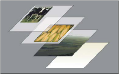
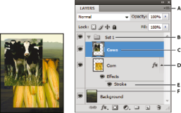
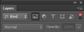

Основные сведения о слоях
Слои Photoshop
Слои в Photoshop напоминают стопку прозрачных листов. Через прозрачные области вышележащих слоев можно видеть содержимое нижних слоев. Можно перемещать слой для изменения положения изображения подобно перемещению прозрачного листа в стопке. Также можно изменять уровень непрозрачности слоя, чтобы сделать содержимое частично прозрачным.

Прозрачные области слоя позволяют видеть слои, расположенные ниже. Слои применяются для выполнения таких задач, как совмещение нескольких изображений, добавление текста или векторных фигур на изображение. Можно применить стиль слоя для добавления специальных эффектов, таких как отбрасывание тени или свечение.
Упорядочивание слоев Photoshop
Новое изображение содержит один слой. Количество дополнительных слоев, слоевых эффектов и наборов слоев, которые можно добавить к изображению, ограничено только объемом памяти компьютера.
Работа со слоями выполняется с помощью панели «Слои». Группы слоев помогают упорядочить слои и управлять ими. Группы помогают расположить слои по логическим группам и упорядочить панель «Слои». Можно создавать группы внутри других групп. Группы можно использовать для применения атрибутов и масок к нескольким слоям одновременно.
Слои для обратимого редактирования
Иногда слои не содержат видимого изображения. Например, корректирующий слой хранит тональные и цветовые настройки, которые влияют на слои, расположенные ниже. Вместо непосредственного изменения изображения можно редактировать корректирующий слой, оставляя нетронутыми пикселы нижележащего слоя. Специальный тип слоя, называемый смарт-объект, содержит один слой содержимого или более. Можно трансформировать (масштабировать, наклонить или перерисовывать) смарт-объект, не изменяя напрямую пикселы изображения. Кроме того, можно редактировать смарт-объект как отдельное изображение даже после вставки его в изображение Photoshop. Смарт-объекты также могут содержать эффекты смарт-фильтров, которые позволяют применять фильтры к изображениям, не нарушая их. Это позволяет в дальнейшем изменить интенсивность фильтра или удалить его.
Слои видео
Для добавления видео к изображению можно использовать слои видео. После импорта видеоклипа в изображение как слоя видео можно применять к нему маску слоя, трансформировать его, применять слоевые эффекты или растрировать отдельный кадр и преобразовывать его в стандартный слой. С помощью панели временной шкалы можно воспроизвести видео или получить доступ к отдельным кадрам.
Обзор панели «Слои» программы Photoshop
Панель «Слои» в Photoshop предоставляет сведения обо всех слоях и группах слоев изображения, а также о слоевых эффектах. Средствами панели «Слои» можно включать и отключать отображение слоев, создавать новые слои, а также работать с группами слоев. В меню панели «Слои» можно получить доступ к дополнительным командам и параметрам.

Панель «Слои» программы Photoshop
A. Меню панели «Слои» B. Группа слоев C. Слою D. Отображение и скрытие эффектов слоя E. Эффект слоя F. Миниатюра слоя
Отображение панели «Слои» в Photoshop
Выбор команды из меню панели «Слои» в Photoshop
Изменение размера миниатюр слоев в Photoshop
Изменение содержимого миниатюры
Для повышения быстродействия и экономии пространства экрана можно отключить отображение миниатюр.
Развертывание и свертывание групп
Фильтрация слоев Photoshop (CC, CS6) Параметры фильтрации, доступные в верхней части панели «Слои», помогают быстро находить основные слои в сложных документах. Можно вывести на экран подмножество слоев на основе имени, типа, эффекта, режима, атрибута или метки цвета.

Параметры фильтрации слоев на панели «Слои»
- Выберите тип фильтра во всплывающем меню.
- Выберите или укажите условия фильтрации.
- Щелкните переключатель, чтобы включить фильтрацию слоя или выключить ее.
Преобразование фона и слоев Photoshop
При создании нового изображения на белом или цветном фоне нижний слой панели «Слои» называется Фон. Изображение может иметь только один фон. Порядок следования, режим наложения, а также степень непрозрачности фона не могут быть изменены. Однако данные атрибуты фона могут быть изменены после его преобразования в обычный слой.
При создании нового прозрачного изображения фон не создается. В этом случае нижний слой не рассматривается как фоновый, поэтому можно изменить на панели «Слои» его местоположение, режим наложения и степень непрозрачности.
Преобразование фона в обычный слой Photoshop
- На панели «Слои» дважды щелкните фон или выберите меню «Слой» > «Новый» > «Из фона».
- Укажите параметры слоя.
- Нажмите кнопку ОК.
Преобразование слоя Photoshop в фон
- Выберите слой Photoshop на панели «Слои».
- В меню «Слой» выберите команду «Новый» > «Преобразовать в фон».
- Всем прозрачным пикселам слоя присваивается цвет фона, а слой перемещается в конец списка слоев.
Примечание. Фон не может быть образован из обычного слоя путем присвоения ему имени «Фон». Для этой цели необходимо использовать команду «Преобразовать в фон».
Видео | Преобразование фонового слоя в обычный слой
Автор: Скотт Келби (Scott Kelby)
Дублирование слоев Photoshop
Дубликат слоя может быть создан в текущем изображении либо в другом новом или существующем изображении.
Создание дубликата слоя Photoshop или группы в текущем изображении
- Выберите слой или группу на панели «Слои».
- Выполните одно из следующих действий.
Создание дубликата слоя Photoshop или группы в другом изображении
- Откройте исходное и целевое изображения.
- На панели «Слои» исходного изображения выберите один или несколько слоев либо группу.
- Выполните одно из следующих действий.
Создание нового документа из слоя Photoshop или группы
- Выберите слой или группу на панели «Слои».
- В меню «Слой» или в меню панели «Слои» выберите пункт «Создать дубликат слоя» или «Создать дубликат группы».
- В раскрывающемся меню «Документ» выберите пункт «Новый» и нажмите кнопку «ОК».
Создание образца на основе всех видимых слоев Photoshop
По умолчанию инструменты «Микс-кисть», «Волшебная палочка», «Палец», «Размытие», «Резкость», «Заливка», «Штамп» и «Восстанавливающая кисть» используют для создания образца только цвета активного слоя. Это означает, что создание образца, а также смазывание изображения производится в пределах одного слоя.
Изменение установок прозрачности
- В Windows выберите пункт меню «Редактирование» > «Установки» > «Прозрачность и цветовой охват», в Mac OS выберите «Photoshop» > «Установки» > «Прозрачность и цветовой охват».
- Выберите размер и цвет ячеек шахматного узора, заполняющего прозрачные участки, или отключите его, выбрав в списке «Размер сетки» значение «Не задана».
- Нажмите кнопку «ОК».